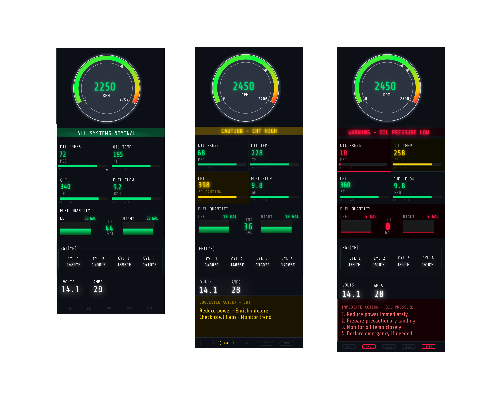

A research-driven redesign of the Cessna 172s Engine Indication System focused on reducing cognitive load, improving scan efficiency, and clarifying critical flight data.

* Three-state system design for rapid interpretation of normal, caution, and warning engine conditions.
Human Factors Design · UX Research · Interface Design
Engine indication systems, scan efficiency, visual hierarchy, and safety-critical decision-making.
Figma · Survey Design · Heuristic Evaluation · Competitive Benchmarking
Human Factors · UX Research · Information Architecture · Systems Thinking · Data Interpretation
As part of an evaluation exercise with Garmin's Human Factors Design team, I was tasked with redesigning an aircraft system of my choice.
Rather than approaching it as a surface-level interface exercise, I treated it as a full human factors problem. I defined the problem space, conducted a heuristic analysis of existing systems, benchmarked competing avionics displays, and gathered pilot feedback through a targeted survey.
I chose to focus on the Cessna 172S — the aircraft I trained on at Mesa Gateway Airport — because it is a system I understand directly from a pilot's perspective. Combining firsthand experience with research insights helped surface gaps in how engine data is structured, scanned, and interpreted under pressure.
Redesign an aircraft system
Research framing, evaluation criteria, pilot input
Cessna 172S
Improve scan efficiency and decision-making under workload
Key Insight
Pilots do not read engine data line by line. They scan for trends, anomalies, and signals that require action.
I structured the project as a research-backed redesign process rather than jumping straight into visuals.
Reviewed existing EIS layouts for hierarchy, consistency, clutter, grouping, and signal clarity.
Compared avionics patterns across systems to understand how engine information is surfaced and prioritized.
Gathered pilot perspectives on scan behavior, information priority, and friction points during interpretation.
Pilots were often looking for direction and change, not just a single static value.
Some visual forms remain effective because they align with trained expectations and support faster interpretation.
Caution and warning color carried the most value when reserved for actual state changes.
The way metrics are organized affects how quickly a pilot can understand what matters.